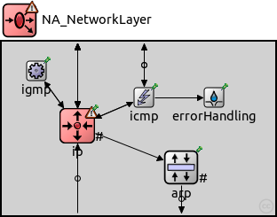
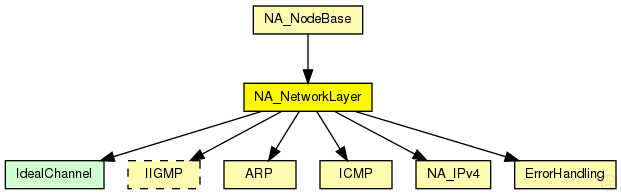
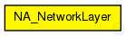

This documentation is released under the Creative Commons license
This documentation is released under the Creative Commons licenseCompound module allowing hacked modules. Modificated from NetworkLayer module.
Allowed hacked modules:
See also: NA_IPv4, IPv4
Author: Gabriel Maciá Fernández, gmacia@ugr.es
Date: 01/22/2013
The following diagram shows usage relationships between types. Unresolved types are missing from the diagram.
The following diagram shows inheritance relationships for this type. Unresolved types are missing from the diagram.
| Name | Type | Description |
|---|---|---|
| NA_NodeBase | compound module |
Compound module allowing hacked modules. Modificated from NodeBase module. |
| Name | Type | Default value | Description |
|---|---|---|---|
| proxyARP | bool | true | |
| igmpType | string | "IGMPv2" |
| Name | Value | Description |
|---|---|---|
| display | i=block/fork,red;i2=status/excl3 |
| Name | Direction | Size | Description |
|---|---|---|---|
| ifIn [ ] | input | ||
| tcpIn | input | ||
| udpIn | input | ||
| sctpIn | input | ||
| rsvpIn | input | ||
| ospfIn | input | ||
| pingIn [ ] | input | ||
| manetIn | input | ||
| ifOut [ ] | output | ||
| tcpOut | output | ||
| udpOut | output | ||
| sctpOut | output | ||
| rsvpOut | output | ||
| ospfOut | output | ||
| pingOut [ ] | output | ||
| manetOut | output |
| Name | Type | Default value | Description |
|---|---|---|---|
| ip.procDelay | double | 0s | |
| ip.timeToLive | int | 32 | |
| ip.multicastTimeToLive | int | 32 | |
| ip.fragmentTimeout | double | 60s | |
| ip.forceBroadcast | bool | false | |
| arp.retryTimeout | double | 1s |
number seconds ARP waits between retries to resolve an IPv4 address |
| arp.retryCount | int | 3 |
number of times ARP will attempt to resolve an IPv4 address |
| arp.cacheTimeout | double | 120s |
number seconds unused entries in the cache will time out |
| arp.globalARP | bool | false |
// // Compound module allowing hacked modules. Modificated from NetworkLayer module. // // Allowed hacked modules: // - NA_IPv4 // // @see NA_IPv4, IPv4 // // @author Gabriel Maciá Fernández, gmacia@ugr.es // @date 01/22/2013 module NA_NetworkLayer { parameters: @display("i=block/fork,red;i2=status/excl3"); bool proxyARP = default(true); string igmpType = default("IGMPv2"); gates: input ifIn[] @labels(IPv4Datagram); input tcpIn @labels(TCPSegment,IPv4ControlInfo/down); input udpIn @labels(UDPPacket,IPv4ControlInfo/down); input sctpIn @labels(IPv4ControlInfo/down,SCTPPacket); input rsvpIn @labels(IPv4ControlInfo/down); input ospfIn @labels(IPv4ControlInfo/down); input pingIn[]; input manetIn; output ifOut[] @labels(IPv4Datagram); output tcpOut @labels(TCPSegment,IPv4ControlInfo/up); output udpOut @labels(UDPPacket,IPv4ControlInfo/up); output sctpOut @labels(IPv4ControlInfo/up,SCTPPacket); output rsvpOut @labels(IPv4ControlInfo/up); output ospfOut @labels(IPv4ControlInfo/up); output pingOut[]; output manetOut; submodules: //# Hacked module replacing the normal IPv4 INET module for attack purposes. ip: NA_IPv4 { parameters: protocolMapping = "6:0,17:1,1:2,2:3,46:4,89:5,132:6,48:7,138:7"; // see: http://www.iana.org/assignments/protocol-numbers @display("p=85,95;q=queue"); gates: transportIn[8]; transportOut[8]; queueIn[sizeof(ifIn)]; } arp: ARP { parameters: proxyARP = proxyARP; @display("p=202,142;q=pendingQueue"); gates: nicOut[sizeof(ifOut)]; } icmp: ICMP { parameters: @display("p=160,63"); } igmp: <igmpType> like IIGMP { parameters: @display("p=39,33"); } errorHandling: ErrorHandling { parameters: @display("p=239,63"); } connections allowunconnected: // transport Layer ip.transportOut[0] --> { @display("m=n"); } --> tcpOut; ip.transportIn[0] <-- { @display("m=n"); } <-- tcpIn; ip.transportOut[1] --> { @display("m=n"); } --> udpOut; ip.transportIn[1] <-- { @display("m=n"); } <-- udpIn; ip.transportOut[2] --> icmp.localIn; ip.transportIn[2] <-- icmp.sendOut; ip.transportOut[3] --> igmp.ipIn; ip.transportIn[3] <-- igmp.ipOut; ip.transportOut[4] --> { @display("m=n"); } --> rsvpOut; ip.transportIn[4] <-- { @display("m=n"); } <-- rsvpIn; ip.transportOut[5] --> { @display("m=n"); } --> ospfOut; ip.transportIn[5] <-- { @display("m=n"); } <-- ospfIn; ip.transportOut[6] --> { @display("m=n"); } --> sctpOut; ip.transportIn[6] <-- { @display("m=n"); } <-- sctpIn; ip.transportOut[7] --> { @display("m=n"); } --> manetOut; ip.transportIn[7] <-- { @display("m=n"); } <-- manetIn; for i=0..sizeof(pingOut)-1 { icmp.pingOut++ --> { @display("m=n"); } --> pingOut[i]; } for i=0..sizeof(pingIn)-1 { icmp.pingIn++ <-- { @display("m=n"); } <-- pingIn[i]; } icmp.errorOut --> errorHandling.in; ip.queueOut --> arp.ipIn; for i=0..sizeof(ifIn)-1 { ifIn[i] --> { @display("m=s"); } --> ip.queueIn[i]; } for i=0..sizeof(ifOut)-1 { arp.nicOut[i] --> { @display("m=s"); } --> ifOut[i]; } }
This documentation is released under the Creative Commons license